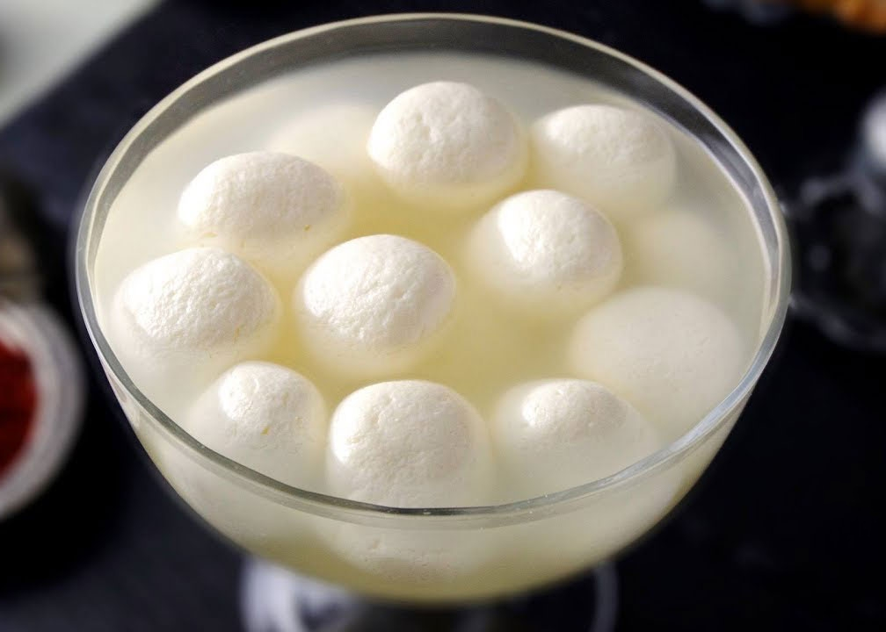

Rasgulla

Description
Rasgulla is one of the popular Indian sweet recipes that
is made by curding milk. Then separating the chenna(paneer
or indian cottage cheese) and whey by draining in a nuslin cloth.
The drained chenna is kneaded and then rolled and then rolled
to balls. These are cooked in sugar syrup till they turn light and
spongy.
Ingredients
Steps
- first rinse heavy bottom utensil to boil milk.By rinsing,you can prevent the milk
from being burnt beneath.Pour milk and bring it to a boil over a medium big heat. Keep stirring to prevent a layer of
cream forming on top.I used Homogenized milk.
- Continue stirring and add lemon juice and turn off stove.
- Add Ice cubes and rest for 2 min.
- wrap the chenna in a cloth and rinse well under running water.
- knead the chenna and make small dough balls.
- Add sugar syrup in a pot and heat it to rolling boil.
- Add the balls to the syrup
- Keep the pan covered and boil for 9 to 10 min.